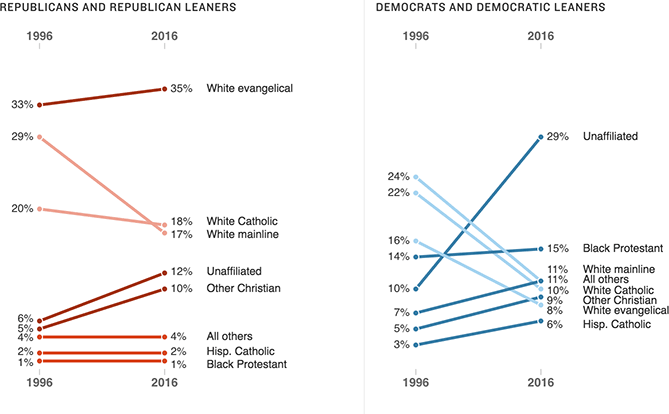

The Vast Difference Between Democrats’ And Republicans’ Religions
Christians (and white Christians in particular) dominate among Republicans, while people who claim no religion have become the largest group among Democrats.
